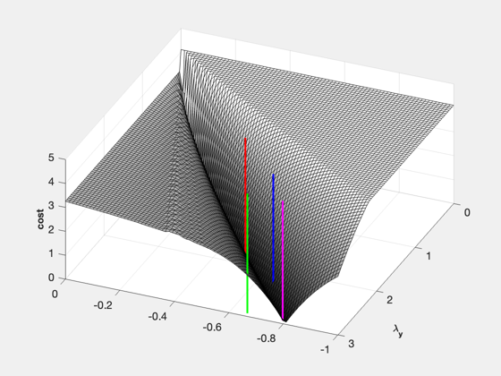

Compute the Zermelo cost function as a function of costate.
------------------------------------------------------------------------
See also WaitBarManager, NewFig, YLabelS, ZLabelS, ZermeloCost
------------------------------------------------------------------------
n = 80;
lambdaX = linspace(-1,0,n);
lambdaY = linspace( 0,3,n);
d = ZermeloCost('get');
d.v = 1;
d.h = 1;
d.x0 = [3.66;-1.86];
d.data.maxStep = 1;
d.data.absTol = 1e-7;
d.data.relTol = 1e-5;
d.tEnd = 10;
d.xF = [0;0];
cost = zeros(n,n);
WaitBarManager( 'initialize', struct( 'nSamp', 50, 'name', 'Computing costs.') );
for j = 1:n
WaitBarManager( 'update', j );
for k = 1:n
cost(k,j) = ZermeloCost([lambdaX(j); lambdaY(k)], d );
end
end
WaitBarManager( 'close' );
NewFig( 'Cost Zermelo' )
surf( lambdaX, lambdaY, cost );
rotate3d on
YLabelS( '\lambda_x')
YLabelS( '\lambda_y')
ZLabelS( 'cost' )
x = [-0.5 -0.65946 -0.68652 -0.78899 ];
y = [ 1.86602540378444 2.9404 2.4593 2.9404];
x = [x;x];
y = [y;y];
z = get(gca,'zlim');
c = [1 0 0 ;0 1 0;0 0 1;1 0 1];
for k = 1:4
h = line(x(:,k),y(:,k),z);
set( h, 'color', c(k,:), 'linewidth', 2 );
end
colormap('gray')
view(-157,50);
